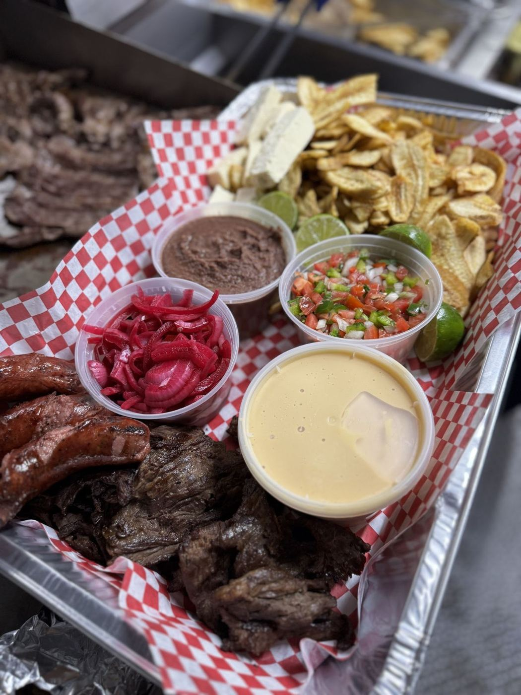

Honduran food, made with love in Odessa
Find the truck on W 42nd St, Thursday to Sunday. 4.8★ from 66 Google reviews.
Call (432) 552-9673El menú
Del menú
Pollo con tajadasFried chicken with green plantain chips.
Pastelitos de carneGolden Honduran turnovers.
BaleadasFlour tortillas with beans, cream and more.
SopasHearty soups like sopa de res and mariscos.
Platos típicosCarne, frijoles, aguacate y plátano.
Lo que dicen
Excellent food always!!!
Pollo con tajadas, pastelitos de carne molida are delicious! Coming from Denver, Co., where we have several Honduran food spots, I was super excited to know this was so close to us. Customer service is great, too.
the food is delicious 🙌 recommend 100% must try 😋
Good food and service. 😋Recommend!
Service was on point! Great atmosphere! Very welcoming! And the food is amazing!
Love their food and service! Highly recommend them!! Delicious 😋
Never had a problem with them! They answer calls and food great! Recommend!